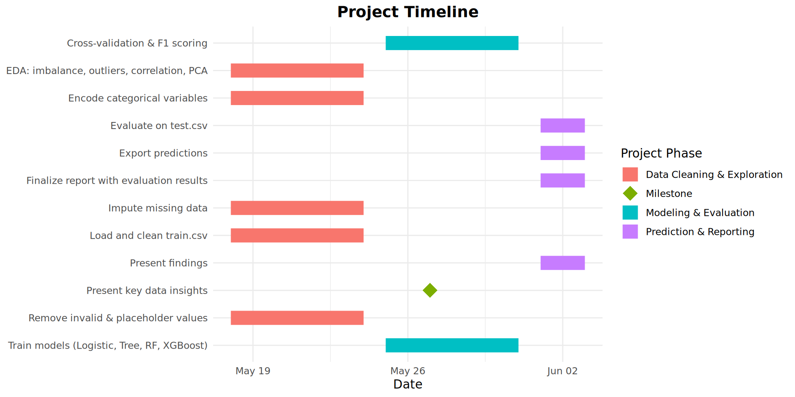

Predicting Credit Scores
A Machine Learning Approach for Smarter Lending Decisions Group 2
Project Introduction
This project aims to build a multi-label classification model to predict the credit score with different categories such as Poor, Standard, Good.
Foundation of this project is a source data set with 100K+ observations and having different financial features associated with it.
Why? To automate risk assessment, reduce manual reviews, and support financial decisions.
Project Outcomes
- Some of the outcomes expected out of this project are
- Highly scalable, robust and performant classifier to predict Credit Score categories and easily adaptable in BFSI sector
- Helps in customer segmentation based on Credit profiles
- Supports automated risk assessment and reduce manual load
- Empowers Fin sector to proactively address the lending risks and deliver the secured and unsecured credit with high confidence
Problem Statement
Why it’s an interesting problem to solve
- Firstly, achieving the expected outcomes is equally rewarding and challenging
- Multi-class types ; Huge volume of observations (~100K) and mix of numeric and categorical features
- Classes are highly imbalanced i.e. majority and minority classes
- Data Quality issues in terms of missingness, outliers, noise in features etc.
- Finally, real potential is huge i.e. Credit score classification plays a crucial role in lending decisions, insurance pricing, and financial eligibility assessments.
- Real-world impact on loans, insurance, and creditworthiness.
Dataset Overview
- 100,000+ customer records
- Features: Income, Age, Debt, Bank Accounts, Occupation, Credit History
- Target variable: Credit_Score (Poor, Standard, Good)
- Files: train.csv, test.csv, score.csv
Data Challenges
- Invalid ages: -500, 8698
- Corrupt SSNs: ‘#F%$D@’
- Missing values in (Credit History & Monthly Salary).
- Target class imbalance: “Standard” dominates (Standard >> Poor/Good)
EDA - Visualization (Correlation Matrix)

PCA: Visualising Credit Profiles
- PCA reduces feature complexity to 2 components
- Shows separation between customer types
- Distinct clusters for “Good” vs. others
Project Phases & Dataset Use
Goal: Predict credit scores (Poor, Standard, Good) using ML
Phase 1: Data Cleaning & Exploration
- Clean and preprocess train.csv
- Handle missing values and invalid entries
- Encode categorical variables
- Conduct EDA (imbalance, correlation, PCA)
Phase 2: Modeling & Evaluation - Train models: Logistic, Decision Tree, Random Forest, XGBoost
- Cross-validation + F1 Score & ROC-AUC evaluation
Phase 3: Prediction & Reporting - Predict on test.csv and score.csv (real-world simulation)
- Export results
- Finalize report
Gant Chart
Known Issue - “Class Imbalanced”
Class Imbalanced means count of observations belong to classes vary in huge difference.In general, ML models work best with balanced classes, however same cannot be expected from most of the real-world data sets where classes are imbalanced and special ways to treat that issue.
Challenges with Imbalanced Data
- Bias Toward Majority Class and often, ignoring minority patterns.
- Poor Recall for Minority Class ; Fails to detect rare events (e.g., fraud detection or credit classification).
Ways to handle “Class Imbalanced” issue
Methods used to solve Class Imbalanced are (applicable to both linear and tree types of ML models)
- Adjusting Class Weights -> Penalizes misclassification of the minority class more
- Oversampling (e.g. SMOTE) or Undersampling -> Balances the dataset before training
- Threshold Optimization -> Instead of default 0.5, choose a better decision threshold
- Adds regularization for better decision boundaries
Linear Models (Logistic Regression)
- Logistic Regression
- Predicts the outcomes that belong to two or more categories.
- Looks at past data –> Identifies patterns –> Estimates Probability –> Makes Decision
- Examples
- High Income -> Chances of “Good” Credit Score
- High Debt -> Chances of “Poor” Credit Score
- Limitations are
- Majority Class dominates often and minority can be ignored
- Poor Recall for Minority Class
- Works best for binary classification in comparison to multi-class labels
Linear Models (KNN)
- KNN
- Assigns class labels based on the majority vote of nearest neighbors labels
- Find the closest data points ; for e.g. Like asking nearby people for opinions.
- Count how many belong to each category i.e. More votes = stronger choice.
- Classify new data based on majority vote i.e. The new item gets labeled based on its nearest neighbors.
- Preferred Linear model
- Examples
- Applicants similar in various features are categorized accordingly
Tree-Based Model: Decision Tree
- A simple Decision Tree was used in EDA to explore how customer features like income, loan status, and credit card use relate to credit score categories. Helps validate patterns, guide feature selection, and spot early class boundaries.
Insight
Customers with high income and no active loans were mostly classified as Good credit.
How it Informs Later Stages
- Features from the tree will be retained in final models.
- Tree-based classifiers (e.g., Decision Tree, Random Forest, XGBoost) will be trained and compared.
- We’ll use cross-validation to evaluate performance and avoid overfitting.
Tree-Based Model: Random Forest
- Ensemble of many trees
- Reduces variance
- Handles imbalance and noisy data better
Boosted Trees: XGBoost
- Iteratively improves weak learners
- Strongest performance on F1 Score and Recall
- Most suitable for deployment
What’s Next?
- Deploy model via internal API
- Schedule retraining every 6 months
- Monitor for performance decay and fairness
About Performance Metrics
Performance Metrics defined and calculated here tells us the story on how best the models perform against train, test and validation data sets. These metrics are evaluated across linear and tree-type models.
Why Accuracy is not a reliable metric for this use-case ?
Example scenario is Misleading Accuracy → A high accuracy might not mean good classification (e.g., if 90% of data is class 0, predicting all as class 0 gives 90% accuracy, but fails completely)
Performance Metrics (Simple)
With Accuracy is ruled out, other metrics that helps to gauge the effectiveness of models are
- Sensitivity (Recall or True Positive Rate)
- Higher sensitivity means fewer false negatives
- Specificity (Precision or True Negative Rate)
- Higher specificity means fewer false positives
- Helpful metric for this credit classification use-case
- F1-Score
- Balances Precision & Recall, making it valuable for imbalanced data
- High F1-score = Model is good at both minimizing false positives & false negatives
Performance Metrics (Complex)
To handle Class Imbalanced data sets, additional performance metrics (which are complex in calculation) are
- ROC (Receiver Operating Characteristic) - AUC (Area Under Curve)
- Handles class imbalance well
- AUC value ranges from 0 to 1 → Higher is better (closer to 1 = stronger classifier)
- PR (Precision Recall) - AUC (Area Under Curve)
- More reliable estimate for performance in highly imbalanced data